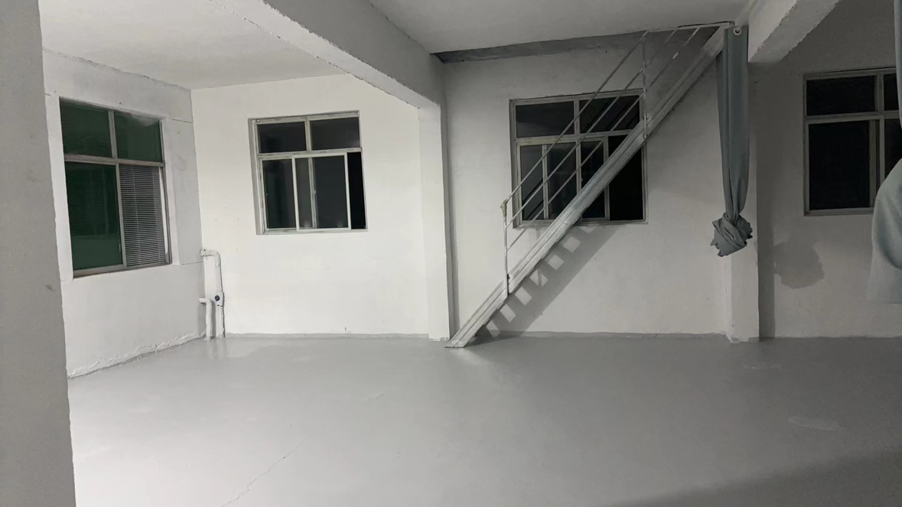
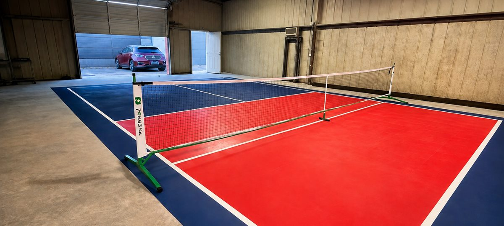

System Gallery
Product, finish and application.
A quick visual reference for the coating format and the type of light-duty floor environment it serves.



Technical Documents
Downloads coming here.
This area is ready for your finalized technical and sales attachments.
PDFSystem Data SheetPlaceholder
PDFTechnical Data SheetPlaceholder
PDFSafety Data SheetPlaceholder
PDFApplication GuidePlaceholder